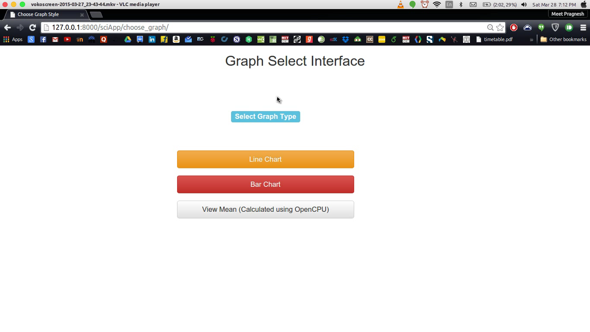

R Statistical Computing Interface.
Welcome to the homepage of the Statistical Computing Interface. Please find below a few screenshots and brief description of the features included until now.
{kind=link}
{kind=link}
{kind=link}
{kind=link}
{kind=link}
{kind=link}
Why Django ?
Usage of Django provides multidimensional advantages in building this Computing Interface. A few are listed below
-
Library Support:
Thousands of useful scientific and statistical python libraries can be harnessed which is not possible easily in PHP, Node.js. Future Proof:
Django is utilized by a lot of modern organizations as it provides a lot of scalibity features such as models, templateFillers etc which makes the interface future proof.Powerful:
With R requests being made asynchronously to the OpenCPU server, makes the server powerful with parallel processing. and less HTTP server load.Secure:
No vulnerability to CSRF attacks.Efficient:
Code is in Python hence lesser lines of code.Contribution:
Statistical analysis is in pure python , hence future contribution from python scientific community can be easy to get.
Demo Video
Author and Contributors
Presently @meetshah1995 is responsible for the development of this interface. To contribute , please send in a pull request with a brief description of what the pull request brings in.
Support or Contact
Having trouble with Pages? Check out the documentation at https://help.github.com/pages or contact support@github.com and we’ll help you sort it out.